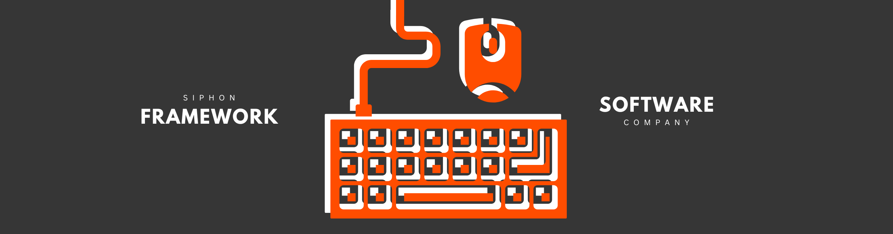

.
The Piping Library is a Windows PC application designed specifically for professionals in the piping and mining industries. It offers an intuitive and cost-effective solution for creating precise technical drawings without the complexity and steep learning curve of traditional CAD software.
With our software, users can quickly design detailed engineering drawings tailored to piping and mining projects. The app’s user-friendly interface and specialized tools empower engineers, technicians, and project managers to focus on their designs without being bogged down by unnecessary features.
Our download the free version to see if the Piping Library is right for you.
.
.
Product Demos
.
Training
.